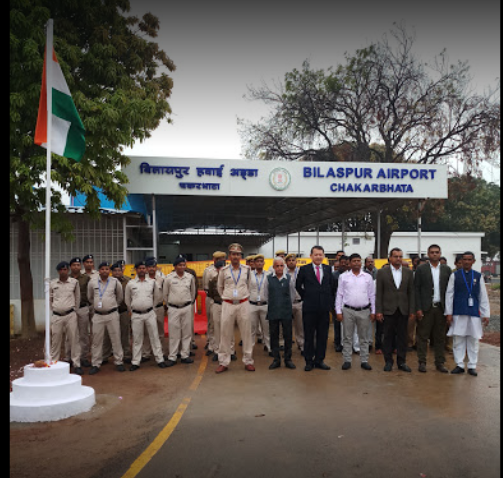
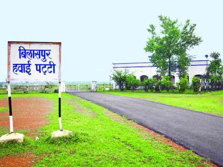
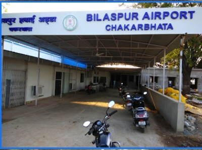

|
Chhattisgarh Tourism |
Bilaspur Airport
Bilaspur Airport is located at the village of Chakarbhatta, 10 km south of Bilaspur, in the state of Chhattisgarh, India. It is owned by the Airports Authority of India. In 1980s, airport was used by Vayudoot to provide flights to Bhopal and Delhi. Currently there is no commercial scheduled flight from the airport. Wikipedia
Address: Chakarbhata, Chhattisgarh 495220
Code: PAB
Elevation: 899